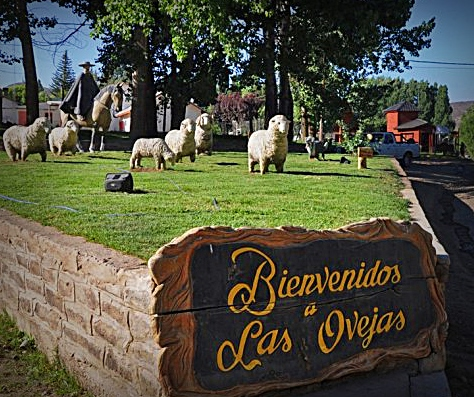

Nuestra Historia
Las Ovejas es una localidad argentina ubicada en el departamento Minas de la Provincia del Neuquén, a 500 km de la capital neuquina.Se constituye como “puerta de ingreso” a muchos de los principales atractivos de la zona, integrando así el Corredor Neuquén Norte,junto al resto de las localidades de la región.

Lagunas de Epulafquen
Las Lagunas de Epulafquen (Epulauquen o Epulaufquen) son dos pequeños lagos ubicados a 30km del pueblo Las Ovejas en la Provincia de Neuquén, Argentina, en plena Cordillera de los Andes. Epulafquen es una voz mapuche que significa “dos lagos”, en alusión a los lagos Superior e Inferior.